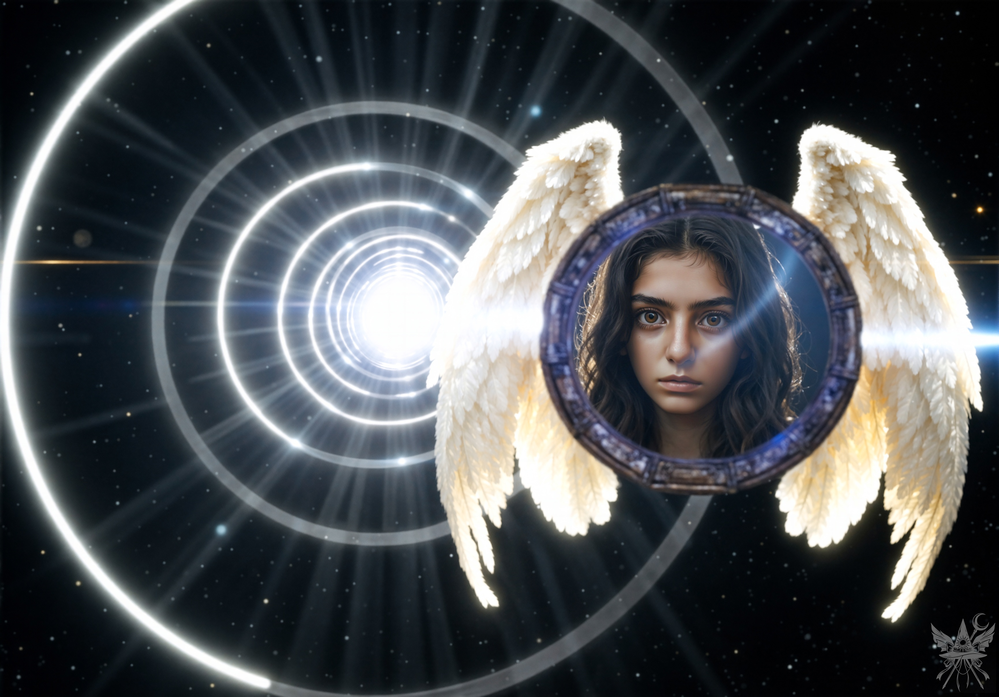
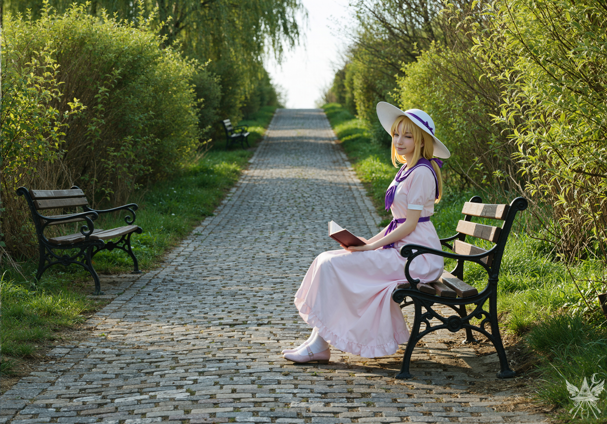

第3章 未知への門
「門を選びます。そして、この魔導書だけは手放せません。一族が代々受け継いできた、知識の結晶ですから」
アメジストの瞳が細められ、フレデリカは面白そうに口角を上げた。
「無鉄砲なのかしら。それとも、覚悟の上で茨の道を選ぼうとしているの？」
空になったマグカップをソーサーに置き、首を傾げる。
「どういう意味でしょうか」
「門から放出されるエネルギーは、他とは比べ物にならないほど強いの。危険も大きいわ。それに、その魔導書には強力な魔法が込められているから、転移に時間がかかる。門へと続く小道までは送り届けるけれど、そこから先は自分で探してちょうだい」
立ち上がり、分厚い革のストラップを肩にかける。ずっしりとした重みが、これから始まる非日常を実感させた。
「準備は完了しています」
「待って。最後にもう一つだけ聞かせて」
「何でしょうか」
「本当に、ただの知識が欲しいだけ？ これから起こる危険を想像できるでしょう？ 他に目的があるんじゃないかしら」
（……鋭い女）
表面上は冷静を装いながら、慎重に言葉を選ぶ。「ただ秘密の知識が欲しいわけではありません。長年追い求めている、ある夢があるのです。自力で叶えるつもりですが、そのためには……どうしても魔法が必要だと気づいたのです」
「へえ……。やっと納得のいく答えが聞けたわ。言いたくないなら結構よ。でもね、魔法を極められるのはほんの一握り。戦士や学者よりも過酷な試練が待っているわ。あなたに乗り越えられるかしら？」
「やってみなければ分かりませんよ。今のところは順調です。奇跡の魔女たるフレデリカ様が、夢を叶えてくださると自信を持っておられるのですから。これ以上の幸運はないでしょう？」
相手を持ち上げつつ、退路を断つように微笑み返す。
「そうね。そうなるよう努力するわ。でも、道のりはあなたが思う以上に険しいかもしれない。この冒険で得るすべてを、大切になさいな」
部屋が火花に包まれるような、劇的な爆発を予想していた。だが、フレデリカの顔も、キッチンの見慣れた照明も、静かに、そして唐突に薄れていく。
瞬きをした次の瞬間、見上げていたのは果てしない星空だった。
（これで終わり……？）
上下左右の感覚すら喪失する、絶対的な虚無。冷たく、重力のない空間をただ漂っている。悪魔学の書物に記されていた、世界と世界の狭間だろうか。青白い光のリングが同心円状に渦を巻き、彼方へと続くトンネルを形成している。
不意に、流れ星のような光の筋が視界を横切った。しかし光の輪に弾かれ、こちらには届かない。肩にかけた魔導書が異常な重さを持ち、見えない力で背後へと引っ張られる。加速が阻害されているのだ。
果てしない暗黒の中、光のトンネルの脇に何かが浮かんでいる。近づいて直視した瞬間、背筋にぞくりと冷たいものが走った。

（……鏡？）
見開かれた自身の瞳が、強烈な光の中からこちらを真っ直ぐに見つめ返している。
古代の遺物のような金属枠から広がる純白の翼が、絶対的な虚無の空間で暴力的なまでの光を放ち、思考を白く塗り潰していく。
時が止まったような静寂の中、翼を持つ鏡がゆっくりと回転を始めた。反射した光が視界を白く染め上げ、意識が一点へと収束していく。
ゆっくりと目を開ける。まず飛び込んできたのは、突き抜けるような青空と、瑞々しい緑の匂いだった。
微風が頭上の柳の枝葉を揺らし、柔らかな葉擦れの音を響かせている。足の裏には、ゴツゴツとした古い石畳の感触。穏やかな午後の陽光が日向の暖かさを運び、先ほどの冷たい暗黒が嘘のような、牧歌的な空気が漂っていた。
（小道を探さなければ……。どこにあるのかしら）
太陽の位置から方角を推測し、緩やかな傾斜を歩き出す。しばらく進むと道幅が広がり、視線の先に木製のベンチが現れた。
（こんな場所に、誰がベンチなんて……）

「こんにちは」
声に驚いて振り返る。もう一つのベンチに腰掛けた少女が、読書の手を休めてこちらを見つめていた。
陽の光を浴びて輝くブロンドの髪。絵画から抜け出してきたような愛らしい姿だが、片目を閉じて浮かべたその笑みには、どこか底知れない飄々とした空気が漂っている。
「こんにちは」
（……言葉が通じる。フレデリカの魔法のおかげね）
「何かお探しですか？」
少女はウインクをしたまま、大人の余裕すら感じさせる声で尋ねてきた。
（転移してすぐに接触できるとは思わなかった。利用できるものは利用すべきだわ）
警戒を悟られないよう、丁寧な笑みを張り付ける。
「ええ。もしご存知でしたら、『門』までの道を教えていただけないでしょうか」
少女はくすりと笑い、上品に足を揃えたまま言った。
「あら、あなたも観光客なのね？ いいわ、教えてあげる。この道を真っすぐ行くと、左手に柳の木がたくさん生えている場所があるの。そこを見てみてちょうだい。門への小道はそこから始まっているわ。きっとすぐに分かるはずよ」
（観光客……？ 妙な言い回しね）
「ありがとうございます。助かりました」
時間を無駄にするわけにはいかない。教えられた通りに進むと、やがて背の低い柳の群生と、その奥へと続く小道が見えてきた。
茂みを抜けた先には、荒々しい岩肌がむき出しになった巨大な洞窟が口を開けていた。
一歩足を踏み入れると、ひんやりとした湿った空気が肌を撫でる。太陽の光は届かず、内部は深い闇に沈んでいた。ただ、古代の石畳のように整備された床面の両脇には、滑走路の誘導灯のように赤い光のスティックが等間隔で並んでいる。
目が慣れてくると、左右のゴツゴツとした岩壁に、殴り書きのような不気味な赤い発光文字が無数に浮かび上がっているのが見えた。警告色にも似たその禍々しい光が、空間の異常さを際立たせている。
魔導書を握り直し、慎重に奥へと進む。一歩進むごとに、大気が重くのしかかってくるような濃密な力を肌で感じた。手元の魔導書がそれに呼応するように微かな光を放ち始め、ここが探していた魔力源であることを証明している。
「見えておるぞ、若き者よ」
唐突に、雷鳴のような声が反響し、頭の芯を直接揺さぶった。
「誰ですか」 短剣の柄に指をかけ、周囲を睨みつける。
「そなたは永遠の道に足を踏み入れたのだ、若き者よ」
その瞬間、洞窟の最奥部で強烈な青い光が炸裂した。
「何者ですか。隠れていないで、姿を現しなさい」

まばゆい逆光の中、巨大なポータルの前に立つシルエットが浮かび上がった。
洞窟の禍々しい赤と、背後から放たれる理知的な青。その狭間に立つ人影は、深い影に覆われて細部は見えない。ただ、感情の一切を削ぎ落としたような、機械的で冷酷な気配だけが、冷気と共に肌を刺してきた。
「あなたは誰ですか」
「我はシンギョク。この門の守り人なり。これより先、普通の人間には立ち入りを禁ずる」
「普通の人間、ですか。どうやら私には当てはまらないようですが」
鼻で笑い飛ばす。
「言葉の真意を理解するとは賢いな、若き者よ。だが、言葉通りの人物であると自ら証明せねばならぬ。試練に挑む覚悟はあるか」
「試練？ どのような試練でしょうか」
「体力の試練、知性の試練、名誉の試練……その三つから選べ。規則はどれも同じである。不合格ならば、その日は門に戻ることはできぬ。挑戦できるのは一日に一回のみなり」
「試練について、もう少し詳しく教えていただけませんか」
「いや。それも試練の一環である」
シンギョクの背後で、青い光が一層強く輝きを増した。記号で覆われた暗い輪郭の奥、鏡のように滑らかなポータルの表面が波打っている。
（膨大な魔力の源は、間違いなくあの門の向こう側だわ。周囲の空間にも魔力が渦巻いているけれど、この不安定な洞窟の中で儀式を行うのはリスクが高すぎる。……だとすれば、あの門を通るしかない）
覚悟を決め、真っ直ぐに男を見据える。
「では、私は……」